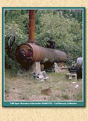
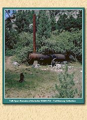
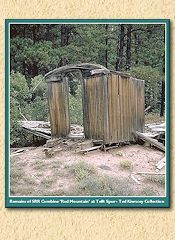
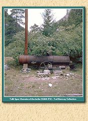
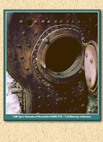

Early Images of The Silverton Branch
of the Denver and Rio Grande Railroad
Canyon of the Rio De Las Animas> - 1881
Jackson photo - 1882
Silverton,Colorado - 1900
Stage road Between Silverton and Ouray at Red Mountain - 1889
Early view of smelter in Durango, Colorado - 1882
Near Durango, Colorado - 1883
Boiler of SG&N #32 at Tefft Spur
Smoke Box of SG&N #32 at Tefft Spur

Boiler of SG&N #32 at Tefft Spur

Boiler of SG&N #32 at Tefft Spur

Remains of SRR Combine Red Mountain at Tefft Spur

Smoke Box of SG&N #32 at Tefft Spur

Open fire box of SG&N #32
Boiler of SG&N #32 at Tefft Spur
Boiler of SG&N #32 at Tefft Spur
This Web page is written, maintained,and hosted by:
Mark L. Evans
Send Comments to:
Mark L. Evans